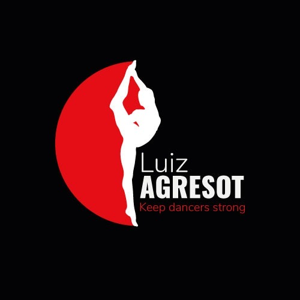
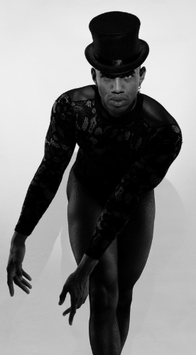
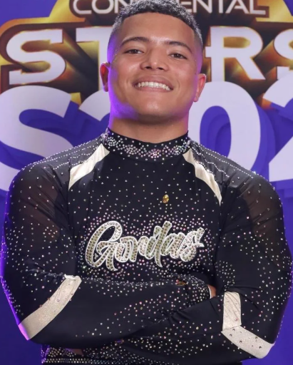
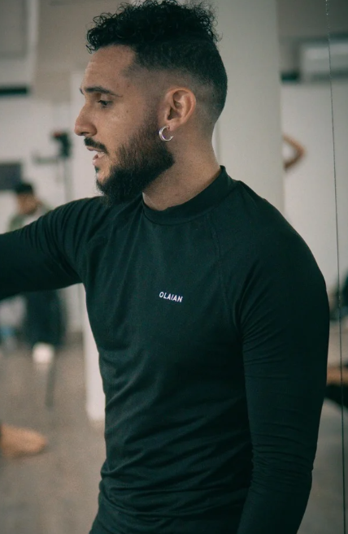

Director artístico de Keep dancers strong con 22 años de trayectoria artística amante del trabajo corporal consciente y de la danza apasionada Con un conocimiento extenso en jazz, teatro musical , certificado en competencias laborales en gestión artística , estudiante del método Mabel ciencia y danza , coreógrafo de gran formato

Entrenador de gimnasia. Soy muy apasionado por mis clases y siempre busco sacar lo mejor de ti y apoyarte. En mis clases no solo aprenderás a hacer acrobacias y movimientos complejos, sino que también aprenderas a dominar tu cuerpo y tu mente que son la clave para llegar a resultados increíbles y movimientos que nunca antes imaginaste hacer. ¿Estás list@ para aceptar el reto? Cree en ti, eso es todo lo que necesitas para mis clases

Artista e investigador del movimiento en la escena contemporánea de Colombia, influenciado por Michael Jackson. Cofundador de Salao, compañía de investigación escénica en Barranquilla. Su práctica y enseñanza conciben la danza como un espacio de energía, goce y exploración, integrando floorwork, hip hop e improvisación, con un enfoque social y accesible al movimiento.
Bailarín y docente de danza con formación en jazz, danza contemporánea y ballet. Campeón nacional e internacional, con una trayectoria artística destacada. Como profesor en escuelas de la Costa Caribe, se distingue por su compromiso con el desarrollo técnico y expresivo de sus estudiantes y el logro de resultados sobresalientes.
Profesional destacada de Pilates con 15 años de experiencia, especializada en Mat, Cadillac y Reformer. Su enseñanza combina precisión, atención al detalle y respeto por los tiempos de cada alumno, ofreciendo clases seguras, personalizadas y efectivas. Transmite técnica, control y fluidez, promoviendo fuerza, flexibilidad, equilibrio y movilidad, junto con una filosofía de movimiento saludable y sostenible.